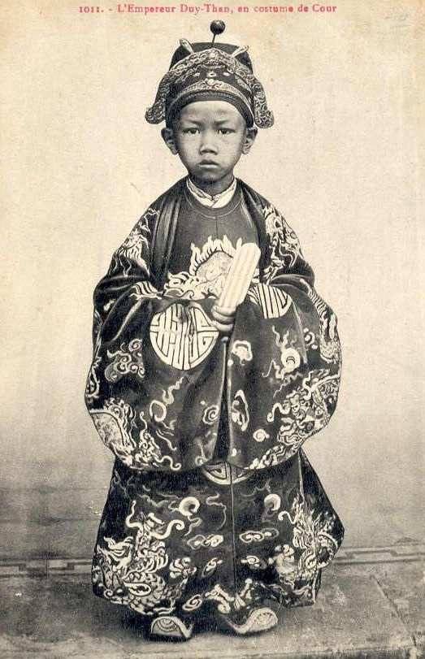

CHẶT ĐẦU TÂY
Tương truyền, khi vua Duy Tân mới mười hai tuổi, có dự ngự yến ở tòa Khâm Sứ cùng với viên cố đạo người Pháp.
Viên cố đạo này đã có tuổi, lại là người thông thạo tiếng Việt và tiếng Hán.
Thấy nhà vua ít tuổi, nhưng có vẻ thông minh và tuấn tú, ông ta mới ra một vế câu đối như sau:
- Rút ruột ông vua, tam phân thiên hạ
Chữ Vương = 王, là vua, nếu bỏ đi một nét đọc thì thành chữ Tam, câu này có ý nhắc đến việc chánh phủ thực dân Pháp chia nước ta ra làm ba kỳ.
Vua Duy Tân nghe xong, liền ứng khẩu đối ngay:
- Chặt đầu thằng tây, tứ hải giai huynh.
Chữ Tây = 西, nếu bỏ đầu thì thành chữ Tứ, câu này rõ ràng thể hiện sự căm ghét Pháp của vị vua thiếu niên.
Câu đối tuy không chỉnh lắm, nhưng cũng đủ làm cho tên cố đạo đau điếng, tím mặt lại, không nói gì nữa.
( Theo báo Tri Tân số 196 )
CÂU HỎI NHỎ, Ý NGHĨA LỚN
Mùa hè năm nào vua Duy Tân cũng ra nghỉ mát ở cửa Tùng, một cửa biển đẹp, yên tỉnh, có bãi tắm bằng phẳng, cát trắng và mịn.
Một hôm nhà vua từ bãi tắm lên, hai tay còn dính cát, một người thị vệ liền bưng lại một thau nước ngọt mời vua rửa tay, vua vừa rửa vừa hỏi:
- Tay bẩn lấy nước mà rửa, nước bẩn lấy chi mà rửa?
Người thị vệ lúng túng không trả lời được. Nhà vua bèn đặt lại câu hỏi:
- " Nước nẩn thì làm thế nào cho sạch? ".
Người thị vệ vẫn không trả lời được. Vua Duy Tân bèn nói:
- Nước bẩn thì phải tìm cách trừ khiẻ những chất ngoại lai lẫn vào trong đó, có hiểu không? " (1)
----------
(1) Theo nhiều tài liệu khác, thì nhà vua trả lời cho người thị vệ hiểu:
- Nước nhớp " bẩn " thì lấy máu mà rửa!" " Dù tư kiệu khác nhau, nhưng đều tỏ rõ ý chí chống xăm lăng

Vua Duy Tân
NGỒI TRÊN NƯỚC.....
Để cách ly vua Duy tân với triều đình Huế, thực dân Pháp cho xây dựng nhà thừa lương ở cửa Tùng để đưa vua ra chơi.
Sống giữa cảnh trời cao bể rộng đó, nhà vua trẻ tuổi không nguôi ngoai nổi đau khổ:
- Vì sao vua Thành Thái bị đày, đất nước vì sao không có chủ quyền, đồng bào vì sao lầm than, cực kgổ mãi?....
Một hôm, quan Thượng Thư Nguyễn Hữu Bài ra thăm, thấy vua buồn bèn bày đi câu. Vua, tôi chèo thuyền ra cửa biển. Mới thả câu nhấp nháy mấy cái thì lưỡi câu mắc không kéo lên được; nhà vua hí hoáy gỡ câu, nhân tiện ra mọt câu vế đối để dò xem ý nghĩ của quan Thượng Thư b về hoàn cảnh quốc gia, dân tộc ra sao. Vua nói:
Ngồi trên nước không ngăn được nước
Buông câu ra đã lỡ phải lần
Ý vua Duy Tân muốn nói: Ông ngồi trên ngai vàng trị vì thiên hạ, nhưng không ngăn được bàn tay đô hộ của người Pháp - đã lỡ lãnh trách nhiệm với quốc gia, dân tộc thì phải tìm mọi cách mà cứu dân, cứu nước.
Ông Nguyễn Hữu Bài, trước câu đối đó, định khuyên vua Duy tân không nên có những ý nghĩ táo bạo như thế, bằng câu trả lời -
Sống ở đời mà ngán cho đời
Nhắm mắt lại đến đâu hay đó.
Nghe lời khuyên, vua Duy tân rất thất vọng về ông Bài Từ đó, nhà vua tỏ ra xem thường ông Thượng Nguyễn; và cả đám đình thần, nhà vua cũng chẳng còn tin tưởng vào một ai.